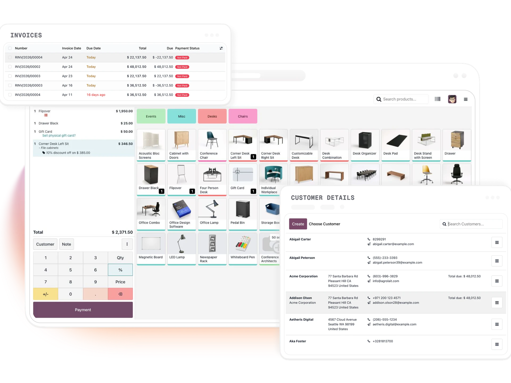

Solutions · Point of sale
POS that talks to your back office.
One POS for retail, restaurant, pop-up, and field, synced to inventory, pricing, and accounting. Online or offline, out of the box.
See Odoo POS in action
Certified
ODOO PARTNER
ISO 12207 & 27001
CERTIFIED DELIVERY
Since 2005
20 YEARS ENTERPRISE DELIVERY
50+
ODOO IMPLEMENTATIONS
500K-employee
ODOO HR & PAYROLL DEPLOYMENT
Configured for Afghanistan
Point of sale, configured for Afghan operations: multi-currency (AFN, USD), local-tax setup, Dari/Pashto-capable data, sanctions-aware procurement controls, and donor-reporting templates aligned to common Afghan-program requirements. Implemented in Kabul, supported regionally.
- 500,000-employee Odoo HR engagement for a national government
- Clients include Da Afghanistan Bank, Afghanistan Payments System, AKDN, World Bank, UNDP
- Jobs.af, Afghanistan's largest job-hunting platform, built by NETLINKS
- Kabul, Afghanistan
- 077-302-0101
- info@netlinks.af
The cost of POS that isn't part of your ERP.
Retailers and restaurants end up with POS disconnected from the back office. Square or Lightspeed runs front-of-house, inventory lives elsewhere, accounting reconciles via nightly exports that break weekly. For a 10-store retailer that's 0.25-0.5 FTE plus $40-90K/year in license and integration maintenance.
Odoo POS is the front-end for Odoo Inventory and Accounting. Sales decrement stock in real time and post revenue to GL immediately. Multi-store chains get unified pricing, simultaneous campaigns, and inter-store transfers from any location.
KEY FEATURES
One POS for every channel.
Retail & restaurant
Tables, floor plans, split bills, kitchen printing.
Offline-first
Works without internet, syncs when reconnected.
Customer loyalty
Cards, points, tiered promotions tied to CRM.
Omnichannel
Buy online, return in store, unified inventory.
Live inventory
Stock levels update in real time across channels.
Payments
Stripe, Adyen, Ingenico, local processors.
REAL NUMBERS
Retail and restaurant wins.
+18%
AVERAGE BASKET
Specialty retailer, after loyalty with personalized offers.
40 → 22 min
CLOSE-OF-DAY
Multi-store chain, automated cash reconciliation and GL posting.
$55K/yr
TOOL CONSOLIDATION
15-location group retired Toast + QuickBooks + R365.
OUR METHODOLOGY
How we deliver Odoo,
structured, rehearsed,
rollback-tested.
Every Odoo engagement we take on runs through the same seven-phase delivery methodology, structured discovery, parallel configuration and data migration, rehearsed cutovers with tested rollback paths, role-based training, and 4–8 week hypercare.
- 01 DISCOVERY
- 02 CONFIGURATION
- 03 CUSTOMIZATION
- 04 DATA MIGRATION
- 05 TRAINING
- 06 LIVE CUTOVER
- 07 HYPERCARE
FAQ
POS questions we hear.
Can Odoo POS work without internet?
Yes. Odoo POS continues to process sales offline and synchronizes data once the connection is restored.
Can I manage multiple stores?
Yes. Manage pricing, inventory, users, and reports for all stores from one Odoo database.
Does it support barcode scanners?
Yes. Odoo POS works with barcode scanners, receipt printers, and cash drawers.
Can customers earn loyalty points?
Yes. You can create loyalty programs, gift cards, and promotional campaigns.
Is it suitable for restaurants?
Yes. It includes table management, kitchen orders, bill splitting, and more.
GET STARTED
Retail, restaurant, or field?
Book a 30-minute demo. We'll show your workflows in Odoo POS, estimate migration effort, and give you a fixed implementation plan.
Book a Demo